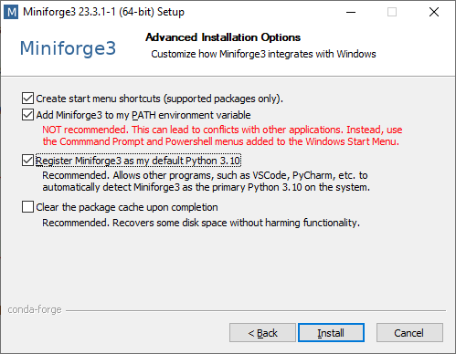

Introduction to Python
Schedule
- Aims
- Why learn Python?
- Basics
- Variables
- Data types
- Loops
- Conditional statements
- List comprehensions
- How to work with Python? (using IDEs, environments, etc…)
- Writing your first Python script
- Loading and saving data
Schedule
- Recap and Q&A
- Using third party libraries from pip and conda
- Functions and methods
- Classes and objects
- Errors and exceptions
- Organising your code
- Documenting your code
Aims
- Introduce Python
- Introduce some basic programming concepts
- Show you one (our) way of doing things
- Not necessarily the best or only way
- Give you the confidence to start doing it yourself
- Prepare you for other courses
Please ask any questions at any time!
Why learn Python?
Why learn Python?
Popularity
- Python is the most popular programming language for data science\(^1\)
Free and open source
- Unlike MATLAB, IGOR, etc…
- Anyone can use your code
- 9.7M open Python repositories\(^2\) on

- 9.7M open Python repositories\(^2\) on

Versatile Not just for data analysis / machine learning
- Visualisation
- Web development
- Data acquisition
Why learn Python?
Packages for everything!
Numpy: arrays
 Pandas: dataframes
Pandas: dataframes
SciPy: scientific computing
 Scikit-image: image analysis
Scikit-image: image analysis
 PyTorch: machine learning
PyTorch: machine learning
 Matplotlib: plotting
Matplotlib: plotting
People have spent lots of time optimising these packages! Don’t reinvent the wheel!
Basics of Python
Variables
- A variable is a name that refers to a value
- You can use variables to store data in memory
- You can change the data stored in a variable at any time
- Allows you to reuse data without having to retype it
Variables
The value of a is:
1The value of c is:
3Variables
The value of a is now:
2The value of x is:
10
The value of y is:
20Data types
- Different kinds of data are stored in different ways in memory
- You can use the
type()function to find out what type of data a variable contains
Strings
- A string is a sequence of characters
- Strings are enclosed in single or double quotes
- Used to represent text
Strings
<class 'str'>
I want to learn Python!- Algebraic operations can have different meanings for different data types
- Try
a*3in the code above
- Try
f-strings
- f-strings are a way to format strings
- Use
fbefore the string - Use
{variable}to insert variables into the string
f-strings
You can also use f-strings to format numbers
Question
- What is the type of…?
100'Dog'3.14printFalse'50'None
Question
- Can you add an int and a float?
Lists
- Ordered collection of values
- Enclosed in square brackets
[] - Any data type, including mixed types
- Indexed from 0 with square brackets
[] - Mutable (can be changed)
Question
- Find the third element from
my_list?
- Change the second element to
3.0?
- What happens if you request
my_list[5]?
Tuples
- Ordered collection of values
- Enclosed in parentheses
() - Any data type, including mixed types
- Immutable (cannot be changed)
- When would you use a tuple instead of a list?
<class 'tuple'>
cat--------------------------------------------------------------------------- TypeError Traceback (most recent call last) Cell In[20], line 6 3 print(type(my_tuple)) 4 print(my_tuple[2]) ----> 6 my_tuple[2] = 'rabbit' TypeError: 'tuple' object does not support item assignment
Unpacking
Question
- How would you turn
my_listinto a tuple?
- How would you turn
my_tupleinto a list?
Dictionaries
- Collection of key-value pairs
- Enclosed in curly braces
{} - Keys are unique and immutable
dict_keys(['a_number', 'number_list', 'a_string', 5.0])
dict_values([1, [1, 2, 3], 'string', 'a float key'])
dict_items([('a_number', 1), ('number_list', [1, 2, 3]), ('a_string', 'string'), (5.0, 'a float key')])
string
a float keyQuestion
Loops
Loops
- You can loop over any iterable
- Use
_if you don’t need the loop variable enumerate()gives you the index and the value
My pet is a: cat
My pet is a: dog
My pet is a: rabbitQuestion
- Create a list of integers from 0 to 5
- Use a loop to find the sum of the squares of the integers in the list
- Print the result
55Conditional statements
Question
- Write a loop that goes through the numbers 0 to 10
- For each number, print whether it is even or odd
- Hint: use the modulus operator
%and==to check for evenness
- Hint: use the modulus operator
List comprehensions
- Concise way to create lists
[expression for item in iterable]
- Can include conditions
[expression for item in iterable if condition]
Question
- Create a list of square even numbers from 1 to 10 using a list comprehension
Writing your first Python script
Writing your first Python script
- Placeholder slide
Loading and saving data
Writing files
- Python can open files in various modes:
- ‘r’ - read (default)
- ‘w’ - write (create or overwrite)
- ‘a’ - append (adds to the end of the file)
- Always close the file after you’re done
- Use
withto do this automatically
Reading files
Demo
- Write a script that saves the below data to a comma-separated file
Demo
Functions
Functions
Functions
- Time consuming and error prone to repeat code
- Functions allow you to:
- Reuse code
- Break problems into smaller pieces
- Scope defined by indentation
- Defined using the
defkeyword - Can take inputs (arguments) and return outputs
Exercise
- Write a function to check that a password is at least 8 characters long
- The function should take a string as input and return
Trueif the password is long enough, andFalseotherwise - You can use the built-in
len()function to get the length of a string
Exercise
True
FalseArguments
- Functions can take multiple arguments
- Positional arguments
- Must be given in the correct order
- Keyword arguments
- Can be given in any order
- Use the syntax
name=value - Must come after positional arguments
- Default arguments
- Have a default value if not provided
- Must come after non-default arguments
Arguments
First animal: dog
Second animal: cat
Third animal: penguinFirst animal: cow
Second animal: elephant
Third animal: penguinArguments
Cell In[56], line 1 def list_animals(first="dog", second, third="penguin"): ^ SyntaxError: parameter without a default follows parameter with a default
Exercise
- Write a function that takes two strings as arguments and prints the longer of the two strings
- One of the arguments should have a default value of an empty string
Exercise
banana
None
apple
NoneUsing * and **
*and**are upacking operators, useful to unpack tuples, lists and dictionaries- I’t common to use
*and**when calling functions - You might have seen the syntax
*argsand**kwargsbefore - This is just a convention to indicate that the function takes a variable number of arguments
Unpacking list:
Unpacking list: (1, 2, 3, 4, 5)
Unpacking dictionary: {}
Unpacking dictionary:
Unpacking list: ()
Unpacking dictionary: {'a': 1, 'b': 2, 'c': 3}How are *args and **kwargs useful?
Return values
Return values
Classes and objects
Objects
- Everything in Python is an object
- Integer, float, string, list, functions…
- Objects have attributes and methods
- Attributes: properties of the object
- Methods: functions that belong to the object
Classes
- A class is a blueprint for creating objects
- Defined using the
classkeyword - Can have attributes and methods (functions)
__init__method is called when an object is createdselfrefers to the instance of the class
Exercise
- Try adding a new attribute
noiseto theAnimalclass - Add a method
make_noisethat prints the noise of the animal
Exercise
nootErrors and exceptions
Errors and Exceptions
- You’ve probably seen an error already
- If not try these, why don’t they work?
--------------------------------------------------------------------------- ModuleNotFoundError Traceback (most recent call last) Cell In[73], line 1 ----> 1 import london ModuleNotFoundError: No module named 'london'
--------------------------------------------------------------------------- TypeError Traceback (most recent call last) Cell In[74], line 1 ----> 1 len(print) TypeError: object of type 'builtin_function_or_method' has no len()
SyntaxError
- Something is wrong with the structure of your code, code cannot run
- What’s wrong below?
Cell In[76], line 1 print hello ^ SyntaxError: Missing parentheses in call to 'print'. Did you mean print(...)?
Exceptions
- Something went wrong while your code was running
- What’s wrong in these examples?
--------------------------------------------------------------------------- ZeroDivisionError Traceback (most recent call last) Cell In[79], line 1 ----> 1 1 / 0 ZeroDivisionError: division by zero
--------------------------------------------------------------------------- NameError Traceback (most recent call last) Cell In[80], line 1 ----> 1 giraffe * 10 NameError: name 'giraffe' is not defined
Tracebacks
- Help you find the source of the error
- Read from the bottom up
- Look for the last line that is your code
- Debugging manifesto 🐛
Tracebacks
--------------------------------------------------------------------------- ZeroDivisionError Traceback (most recent call last) Cell In[82], line 7 4 def call_func(x): 5 y = divide_0(x) ----> 7 z = call_func(10) Cell In[82], line 5, in call_func(x) 4 def call_func(x): ----> 5 y = divide_0(x) Cell In[82], line 2, in divide_0(x) 1 def divide_0(x): ----> 2 return x / 0 ZeroDivisionError: division by zero
Handling exceptions
- What if you know an error might happen?
5.0--------------------------------------------------------------------------- ZeroDivisionError Traceback (most recent call last) Cell In[83], line 5 2 print(x / y) # This might raise an error 4 divide(10, 2) ----> 5 divide(10, 0) Cell In[83], line 2, in divide(x, y) 1 def divide(x, y): ----> 2 print(x / y) ZeroDivisionError: division by zero
Handling exceptions
- What if you know an error might happen?
- You can handle it with
tryandexcept
Handling exceptions
- What’s the problem with this code?
- Don’t make your
excepttoo general!
Result: 5.0
Y cannot be zero!
Both x and y must be numbers!Exercise
- Write a function to return the length of the input
- If the object has no length, return
None
Exercise
5
None
3How to work with Python?
Ways of working with Python
REPL(Read-Eval-Print Loop), “interactive Python”, “Python console”Jupyter notebooks(.ipynb)Scripts(.py)
Demo time! 🧑🏻💻👩🏻💻
IDEs: Integrated Development Environments
- Used by most developers
- Allows you to switch between the three main ways of working with Python
- Within the same program you can:
- Edit → Text editor 📝
- Organise → File explorer 📁
- Run → Console 💻
Example IDEs
- Visual Studio Code - more customizable
- PyCharm - optimized for Python
- …
You can click on the name to go to the download page.
Install the one you like most!
Igor prefers PyCharm, Laura prefers VS Code.
Virtual environments
Scientific Python ecosystem
Diagram showing the scientific Python ecosystem.
Virtual environments
- Many packages are continuously developed 🔁
- This means there will be breaking changes
- Some packages will require specific versions of other packages
- Similar with Python versions
- New versions of Python may introduce new features or deprecate old ones
Virtual environments

Virtual environments
- Many packages are continuously developed 🔁
- This means there will be breaking changes
- Some packages will require specific versions of other packages
- Similar with Python versions
- New versions of Python may introduce new features or deprecate old ones
- How can we have two versions of the same package installed at the same time?
- Virtual environments! 🎉
Virtual environments
Conda environments
- Conda is a
package managerandvirtual environment manager - Separates Python environments from each other (and from system Python)
- Can also manage non-Python packages (e.g. R, C libraries, etc…)
- Reproducible environments that can be shared with:
- Collaborators
- Readers of your paper
- Future you (HPC, etc…)
Install miniforge
Click here to go to the download page
Windows troubleshooting
- Did you had a previous version of Anaconda installed? You might need to uninstall it first.

Remember to add Miniforge to your PATH! The installer will say is not required, but it is! conda not found? Runconda initin your terminal.
Environment management
In your terminal (use Anaconda Prompt on Windows):
- Creates a new environment named
python-intro - Installs Python 3.13 and Jupyter Notebook in that environment
Environment management
In your terminal (use Anaconda Prompt on Windows):
- Remember to activate the environment before using it!
Environment management
In your terminal (use Anaconda Prompt on Windows):
- Deactivates the current environment
Environment management
In your terminal (use Anaconda Prompt on Windows):
- Lists all conda environments on your system
Environment management
In your terminal (use Anaconda Prompt on Windows):
- Deletes the
python-introenvironment and all its packages
Modules and packages
Standard library
- A module is a file containing Python code
- A package is a collection of modules
- The standard library is a set of modules that come with Python
- It provides a wide range of functionality
- File I/O
- Time and date handling
- Math and statistics
- Accessed using the
importandfromkeywords
Installing a third-party package
Important
- In the terminal, not in the Python console!
- Remember to activate the conda environment first
Using packages
Importing packages
- You can import all available functions in a package
- You can import a specific function from a package
- Use
from ... import ...
- Use
- You can also rename the package or function using
as- Common convention for
pandasispd
- Common convention for
Installing packages
Exercise
In your conda environment, using pip:
- Install
numpy - Uninstall
numpy - Install
numpyversion1.26.4 - Update the installation of
numpy - Install
matplotlibandscikit-imagein one command - List all installed packages with
pip list
Exercise
Exercise
Organising your code
Structuring your code
- As your code gets more complex, you will want to organise it into multiple files and folders
- This makes it easier to find and reuse code
- Python modules and packages help you do this
- You can also use version control (e.g. Git) to manage changes to your code (covered in the good practices lecture)
Exercise
Exercise
- In a new file
analysis.py, import the functions frommy_funcs.pyand use them - Modularity promotes reuse!
Structuring your code
- As your codebase grows, consider organizing files into directories
Organisation
- Organise your code like you would any other project
- Use meaningful names for files and directories
- Group related functionality together
Documenting your code
Documenting your code
Documenting your code
- Each function should do one thing
- Give functions descriptive names
- This is a form of documentation too!
Comments
Docstrings
- Use docstrings to describe what a function does and how to use it
- Detail inputs and outputs
- Use triple quotes
"""for docstrings
README files
- Single file, usually
README.mdorREADME.txt - Outlines most important information
- What the project does
- How to install
- How to use
- Very useful for others (and future you!)
Next steps
Next steps
- We’ve covered some of the basics
- Next steps – Practice!:
- Mess around with code
- Solve problems
- Google stuff
- Contact
- Additional courses :::
Further resources
Troubleshooting tips
- Make sure the correct environment is activated
which pythonorwhich pipto check
- Check the scope of your variable
- Pay attention to whether an operation is
in_placeor not- Especially with
pandasandnumpy
- Especially with
- Structure your code as a package as soon as you can
pyproject.toml→ more on this in future sessions!
- Look out for deep vs shallow copies
- Especially with collections (lists, dicts, sets)
Question
Troubleshooting tips
- Read the error messages!
- Google is your friend
- LLMs can help too
- Ask a colleague or contact us
- Use a debugger (e.g.
pdb, or IDE built-in debuggers) - Write tests for your code (e.g. using
pytest)

Sainsbury Wellcome Centre | 2025-09-30
Comments
#for single-line comments"""for multi-line comments or docstrings